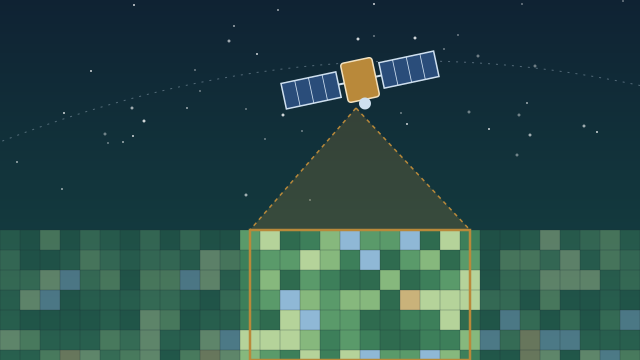

Learning
Learning materials on GIS, remote sensing, and GeoAI.

17-week lesson planRemote Sensing
From satellite imagery basics to forest mapping, LiDAR, and machine learning, using QGIS, Google Earth Engine, and Python.
Learning materials on GIS, remote sensing, and GeoAI.

17-week lesson planFrom satellite imagery basics to forest mapping, LiDAR, and machine learning, using QGIS, Google Earth Engine, and Python.